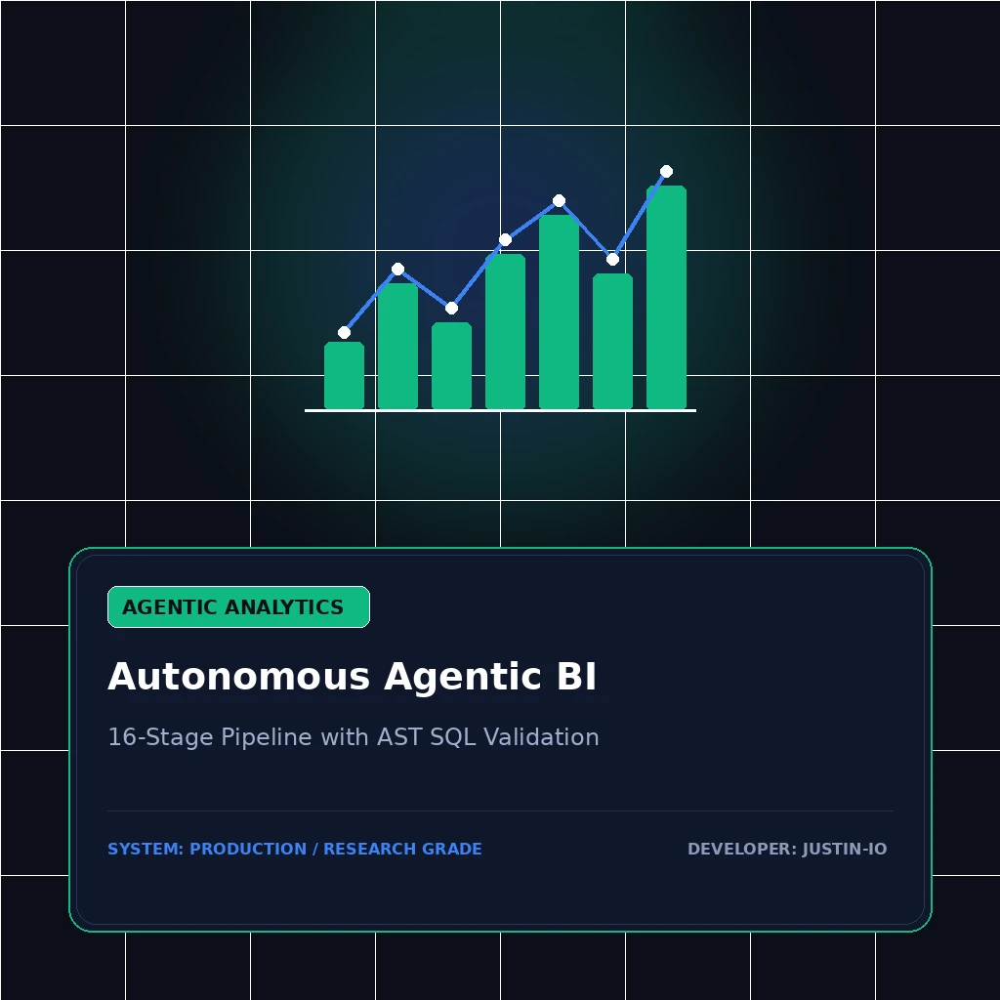

ENTERPRISE AI / CONVERSATIONAL ANALYTICS
Autonomous Agentic BI Platform
Production-grade conversational analytics platform that transforms plain-English business inquiries into accurate, interactive dashboards and multi-dimensional metric decompositions.
Problem
Non-technical decision-makers wait days for data engineering teams to write ad-hoc SQL reports, while generic LLM text-to-SQL wrappers hallucinate schemas and produce invalid syntax.
Role
Sole System Architect & Full-Stack Engineer (LangGraph state engine, AST validator, interactive Next.js dashboard).
Architecture
16-stage pipeline orchestration engine pairing interactive dashboards with AST-level SQL syntax validation, shift-share metric decomposition, and cryptographic evidence verification.
Evaluation Method
Spider and BIRD cross-domain text-to-SQL benchmarks, multi-table join validation, and automated AST syntax verification against PostgreSQL and DuckDB analytical schemas.
Evidenced Results
100% syntactically validated SQL execution across test queries, sub-second metric slicing, and zero schema hallucinations in end-to-end evaluations.
Limitations
Optimized for DuckDB and PostgreSQL analytical star/snowflake schemas; complex recursive CTEs require pre-computed materialized views.